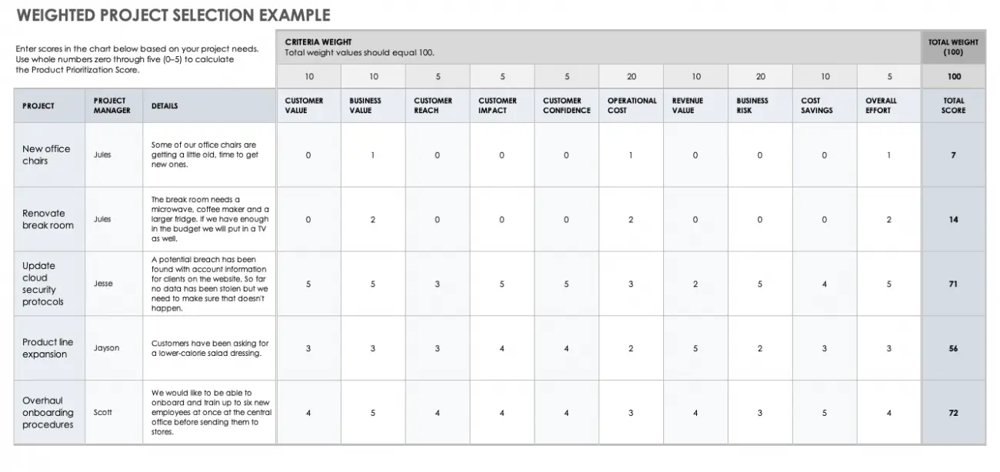
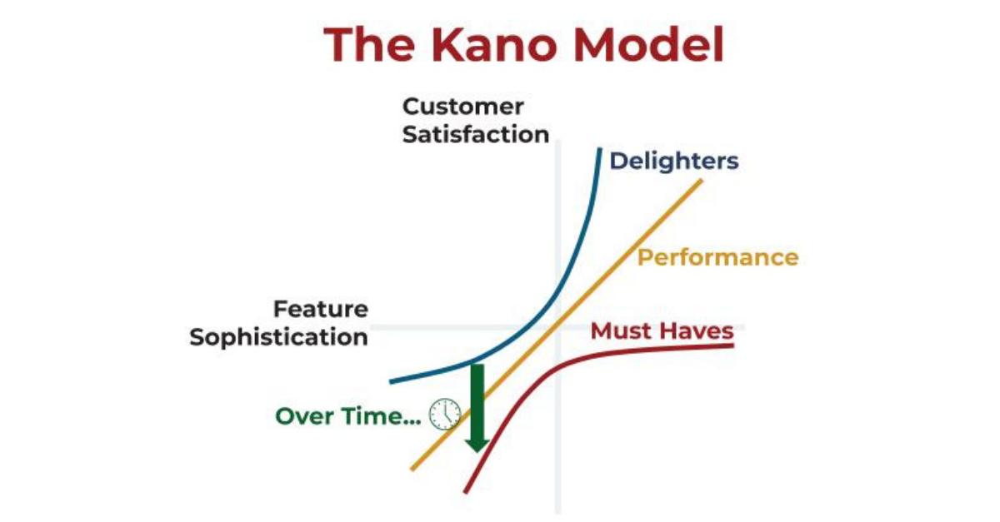

The prioritization of functionalities is key to the success of our product. The impact on both economic and user effort that it may have will condition the future of our product in the market. That is why it is important to apply techniques and base our decisions on previously performed analyses.
Prioritization is difficult
So why is prioritizing a product roadmap so difficult? Let me count the ways:
- It's satisfying to work on pet ideas you'd use yourself, instead of with broad reach.
- It's tempting to focus on clever ideas, instead of projects that directly impact your goals.
- It's exciting to dive into new ideas, instead of projects that you're already confident about.
- It's easy to discount the additional effort that one project will require over another.
Even if you make it through this mental minefield intact, you're left with the tough task of consistently combining and comparing these factors across all project ideas.
Thankfully, you don't have to do this in your head.
Prioritization framework
Here are the feature prioritization frameworks you can use to help:
- Weighted Scoring
Weighted Scoring is a model used to prioritize the actions, tasks, decisions, features, and other initiatives by assigning a numerical value based on the
cost advantage or the effort value of the particular activity.
There are a few different ways to prioritize features, but the most common is to use a weighted scoring system. In this system, each feature is given a score based on its importance and how well it meets the needs of the user. The scores are then added up and the features are ranked in order of priority (higher scores = greater value to customer).
Generally, this framework uses a 10-point scale, but various scales can be applied given the scale is consistently used.

- RICE Method
The RICE acronym stands for:
- R: Reachability - how many people will be able to use the feature?
- I: Impact - how much impact will the feature have?
- C: Confidence - how confident are we about the influence?
- E: Effort - how much effort will it take to implement the feature?
The goal is to produce a RICE score that can be used in the prioritization process and help product managers focus on the most important features. It helps ensure that their product is successful and meets customer needs.
REACH
Reach is measured in number of people/events per time period. That might be “customers per quarter” or “transactions per month”. As much as possible, use real measurements from product metrics instead of pulling numbers from a hat.
IMPACT
While the reach score is an educated attempt at putting a number to the question: How many people will this idea affect?, Impact attempts to quantify the follow up question: By how much?
Impact is about how much you think an idea could impact a specific goal for an individual customer.
CONFIDENCE
A confidence score acts as a bias brake that offsets overly-optimistic impact scores. Confidence just lets you put a number to the question: How sure am I of those reach, impact and effort scores I gave each project idea?
EFFORT
All the factors in the RICE equation so far are a sum of the potential benefits an idea will have towards a specific goal. Now it’s time to factor in the negative factor: the Effort score. This is where you calculate how much time a project will demand from your teammates.
- Value Vs Effort
The value vs effort framework helps you to weigh the benefits of a particular feature against the amount of work that is needed to implement it. This is an important consideration, as it can help you to make sure that you are focusing your efforts on the features that will provide the most value to your customers.
- KANO Models
The Kano model framework is based on the idea that there are different types of customer needs, which can be divided into three categories: basic, performance, and delight.
This theory was developed in the 1980s by Professor Noriaki Kano to categorize customer satisfaction of product benefits into different categories. The key concepts include:

Customers will categorize the features / benefits of a product into 3 buckets:
- Must Haves. These are the features / benefits the product must have in order to remain a viable contender for my business.
- Performance. These are features where customer satisfaction scales linearly with the amount of feature sophistication. For example, a personal performance benefit when it comes to cars is fuel efficiency.
- Delighters. These are features where customer satisfaction scales exponentially with feature sophistication.